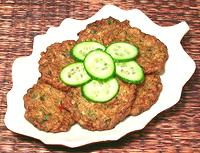

|
Fish Cakes #2Thailand | ||||
| Makes: Effort: Sched: DoAhead: |
20 cakes *** 1-1/4 hrs Yes |
In Thailand the proper and acceptable fish for fish cakes is Featherback, but this recipe, written by a Laotian refugee in Hawaii, is a little more tolerant - and figures you don't have featherbacks. | |||
| If you do have Featherbacks (or Featherback Paste), see Fish Cakes #1. You still need to serve these with Cucumber Sauce, though - we're not going to be that tolerant. | |||||
|
1 4 6 2 2 2 1/4 2 1/4 1/2 ar ---- |
# oz oz T c c t ---- |
Fish (1) Long Beans (2) Onion Chili, red (4) Cilantro Lemon Grass (3) Fish Sauce Eggs Cornstarch Sugar Oil, deep fry -- Serve With Cuke Sauce (5) |
Prep
|